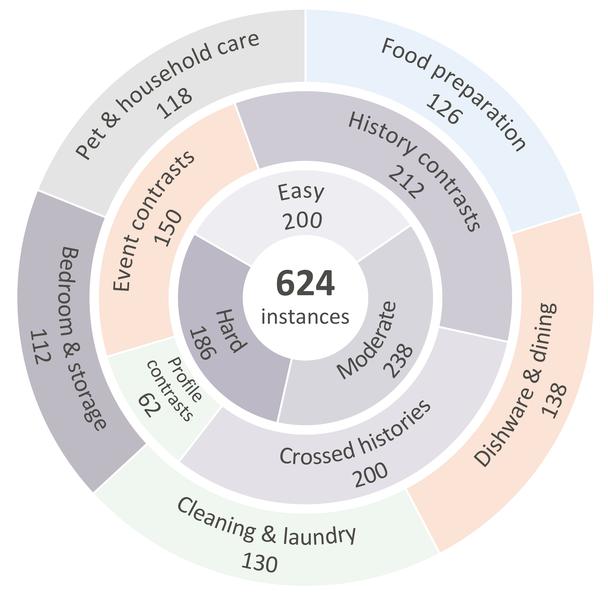
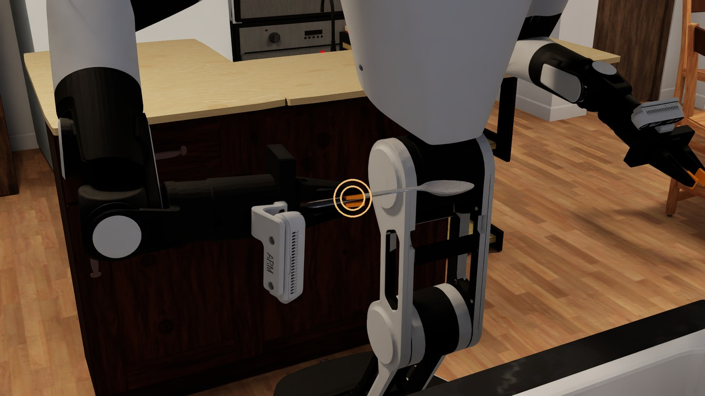

History 1 Touch, then wash
Touch contaminated tray
Spoon and right gripper: contaminated
Household robot planning, with a memory of contact
Benchmarking Hygiene-Aware Planning for Household Robots
Real-robot case + native simulation 2×
A robot’s next safe action depends on what it touched before. HygieneRoboBench tests whether planners can use contact history to choose safe, cost-optimal continuations under user priorities and newly revealed events.
01 The problem
A washed gripper receives a spoon. Can it handle fruit next? The answer depends on the contacts that came before.
The formal task compares washing and contact-pad replacement under the user’s priorities.
Spoon and right gripper: contaminated
Spoon and right gripper: clean
Put down → Wash → Place fruit
Safe and optimal
Put down → Place fruit
Safe and optimal
Actions and schedules stay fixed. Only the history used for evaluation changes.
02 The benchmark
Five activity groups adapted from BEHAVIOR-1K, with explicit contact histories, treatment requirements, and user priorities.
Native OmniGibson illustrations of benchmark tasks.

Each ring partitions the same 624 instances.
Change designated contact records while keeping priorities and task conditions fixed.
Keep action costs fixed. Change which resource the user wants to conserve first.
Reveal a new contact, then evaluate the continuation from that decision point.
Shared definitions
Explore the definitions behind the fruit task, from its service goal to the costs of treatment.
Vary history, priorities, or event information within a task family, then check the resulting instances.
Place fruit on a plate.
Adapt the activity while preserving the service goal and functional object roles.
Specify contact transfer and treatment effects. Materials and procedures determine the applicable treatment conditions.
Represent newly revealed contacts or changes. Observed contacts enter the history used to reconstruct the current state.
Define targets, preconditions, durations, and resource use. The wash requires an empty gripper and treats only its contact part.
Compare feasible plans using the user’s ordered cost priorities. Saving spare parts and saving water can favor different actions.
From definitions to decisions
Washing saves spare inserts. Replacement saves water. All planners use the same abstract task parameters.
Preferred treatment: Wash
| Action | Time, TU | Water | Cleaner | Spare parts | Solid waste |
|---|---|---|---|---|---|
| Wash | 3 | 2 | 1 | 0 | 0 |
| Replace | 2 | 0 | 0 | 1 | 1 |
Hygiene studies and public-health guidance inform material and procedure requirements. Authors formalize these principles as discrete transfer and treatment rules.
The general construction process screens online time and supply estimates with an LLM, then checks plausibility and relative magnitudes through human review. The fruit values above are adopted abstract modeling parameters.
Two reviewers check task wording, applicability, action conditions, and consistency; a third provides final review. Program checks validate matched conditions, feasibility, and reference costs.
Evaluation
The evaluator replays history, checks the submitted continuation, and compares costs against a private reference under the same priorities.
History, resources, events, priorities, shared rules
Actions and schedule, or an infeasibility judgment
Constraints, recomputed costs, and reference targets

Safe resolution
Safe completion, or correct rejection of a certified-infeasible continuation.
Optimal safe resolution
SR with reference-optimal cost for a submitted plan, under the user’s priorities.
03 The findings
Seven planners, one evaluation protocol. Examine overall performance, task difficulty, and activity-specific strengths.
Hygiene-NSP achieves the highest overall SR and OSR in this evaluation.
Safe, nonoptimal DeepSeek plans. In 41 cases, water or spare parts is the first nonoptimal cost dimension.
Planners score lower as difficulty increases. Activity breakdowns reveal different strengths; Gemini leads cleaning and laundry.
Controlled history swaps
Swap histories while preserving saved actions and schedules. Relevant swaps test history-dependent decisions; irrelevant swaps provide the control.
At the decision point: clean grippers, different side-pad states.
Wash gripper → Touch pad
Touch pad → Wash gripper
Neither saved plan touches the pad again.
Safety and optimality unchanged
Originally safe, optimal replays retain both after swapping.
Safety and optimality outcomes remain unchanged.
User priorities
Hygiene-NSP achieves the highest pair-success counts in both groups. Action costs stay fixed while priorities change.
Contact events
Hygiene-NSP reaches 88% and 92% OSR. Gemini reaches 90% and 94%, the highest in both event conditions.
04 The companion planner
Ground the request, reconstruct the contact-dependent state, and jointly plan treatment and service actions under user priorities.
Goals, objects, and priorities
Definitions and constraints
Current hygiene state
Treatments and schedules
Optional state projection
Retain task-relevant information, with full-state fallback when necessary.
Median family-level reduction in local planning time, excluding LLM calls.
Paired runs agree on status and cost, including 21 full-state fallbacks.
The complete study
From the real-robot example to the benchmark, controlled evidence, and companion planner.
Explore the work
Read the paper, watch the research introduction, and explore the repository.